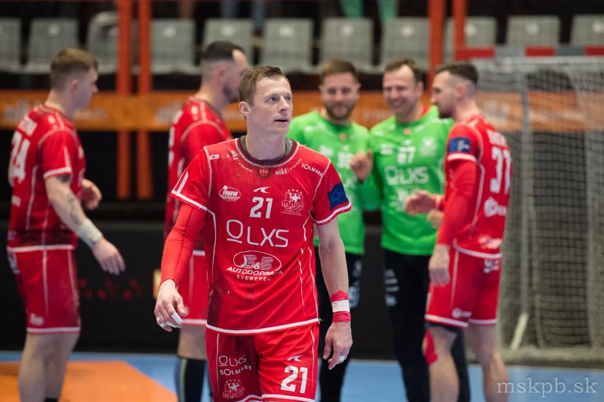
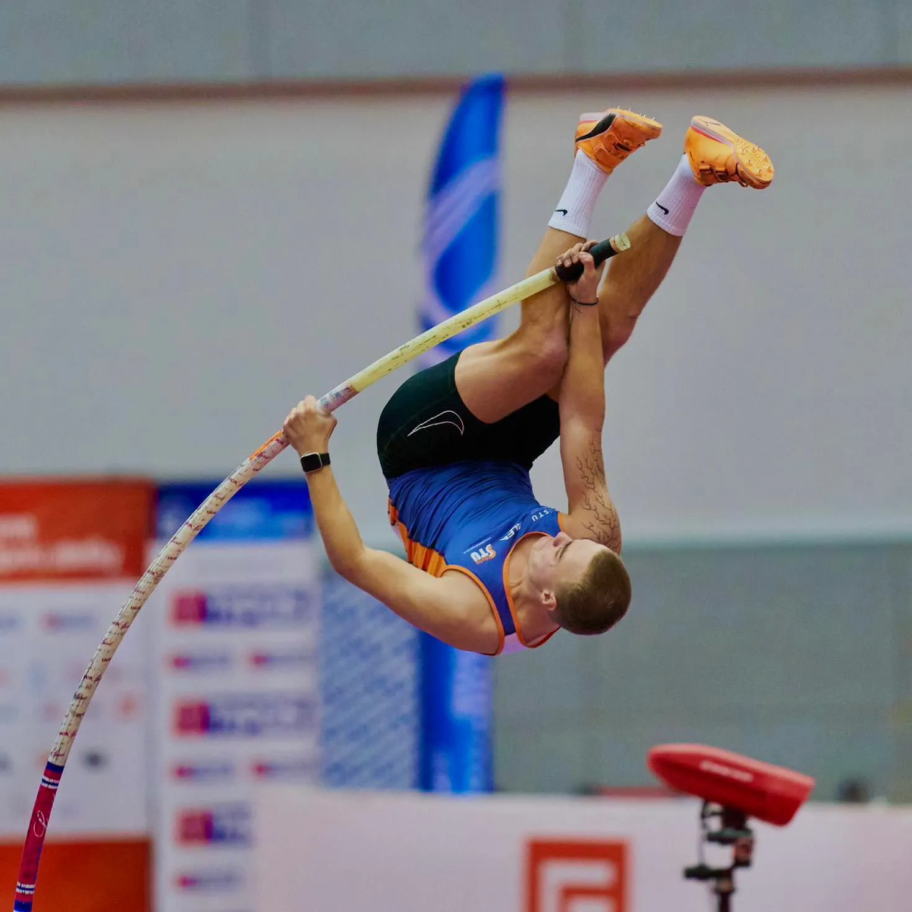
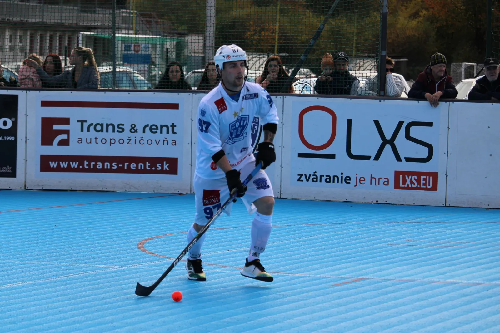
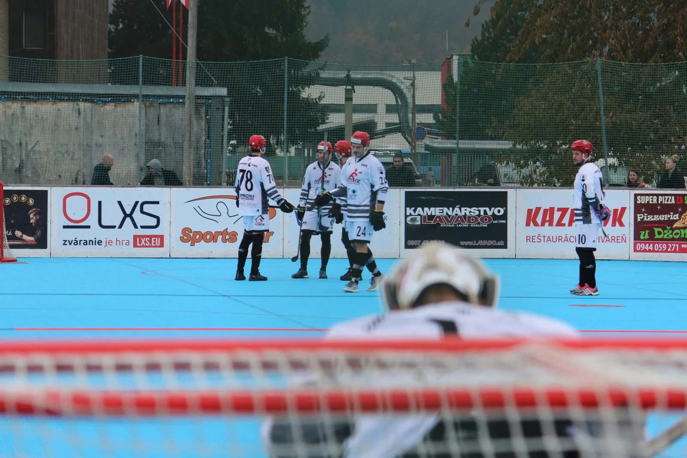
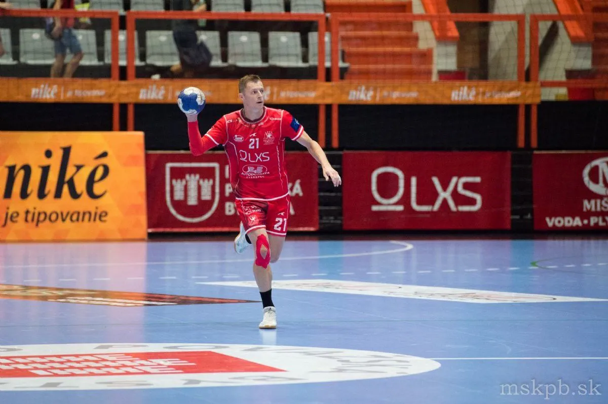
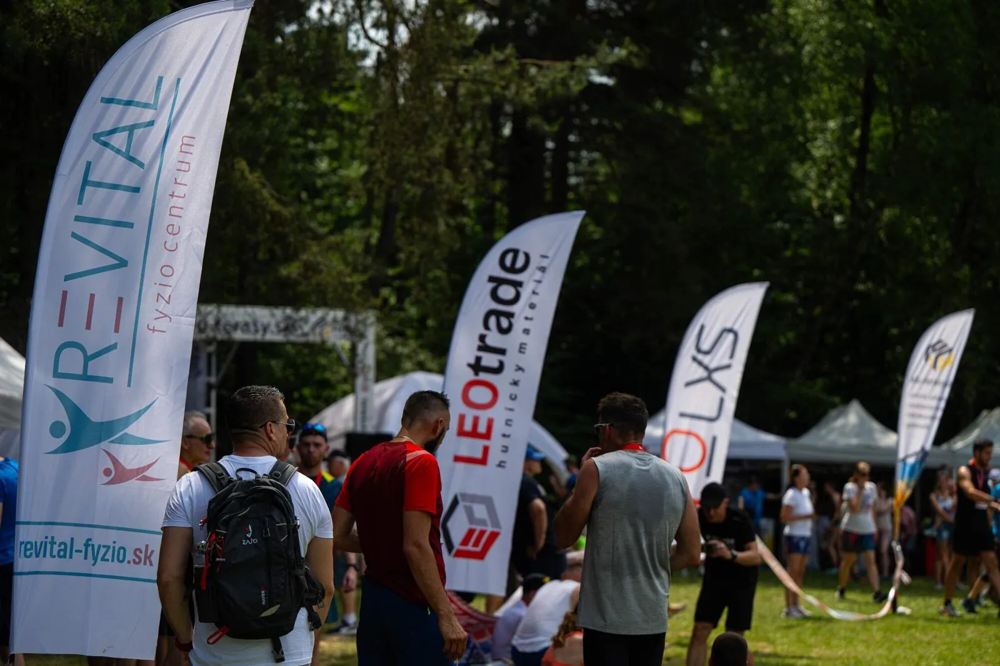
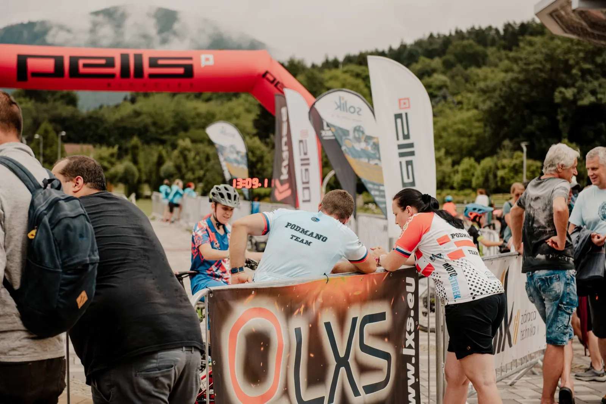
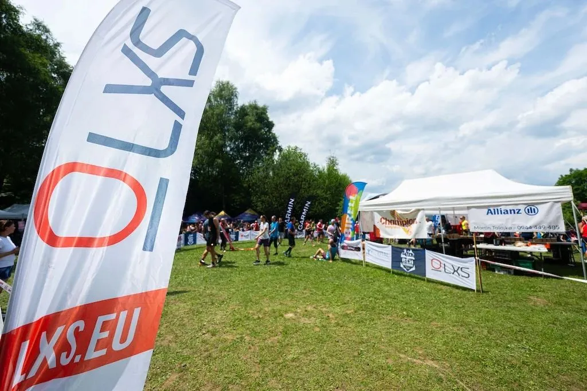

Úvod / O nás
Oceľové riešenia od roku 1998
Od malej firmy k modernej výrobe s laserom, CNC ohýbaním a robotickým zváraním. Takto sme sa dostali tam, kde sme dnes.
Začiatky
Firma vzniká pod názvom LINIER s.r.o.
Nový vlastník
Zmena vlastníka a názvu na LUBOXSTEEL s.r.o.
LXS s.r.o.
Firma pôsobí pod dnešným názvom LXS.
Moderná výroba
Laser, CNC ohýbanie a robotické zváranie s certifikáciou ISO.
Kto sme
Sme slovenský výrobca oceľových septikov a príslušenstva k nim. Spolupracujeme so stavebnými firmami, samosprávami aj priemyselnými partnermi na Slovensku aj v zahraničí. Naša výroba spĺňa medzinárodné štandardy kvality.
- Mobilné oceľové septiky 20 FT, 10 FT, 08 FT a 05 FT
- Schody k septikom a sanitárnym kontajnerom
- Laserové pálenie, CNC ohýbanie a robotické zváranie
- Oceľové konštrukcie na mieru
Z našej výroby
Certifikácia
Naša výroba je podložená certifikátmi kvality. Kliknutím certifikát zväčšíte.
Podporujeme
Sme hrdým partnerom športu a podujatí v regióne Považskej Bystrice.

MŠK Považská Bystrica
Hádzanársky klub s tradíciou od roku 1947, ktorý hrá najvyššiu súťaž a venuje sa výchove mládeže.
Viac informácií
Boris Hojdik
Mladý skokan o žrdi z Považskej Bystrice, ktorý reprezentuje Slovensko.
Viac informáciíBeh Kalváriou
Charitatívne bežecké podujatie na Kalvárii v Považskej Bystrici.


HBK PROTEF Považská Bystrica
Hokejbalový klub z Považskej Bystrice.
Z podujatí




